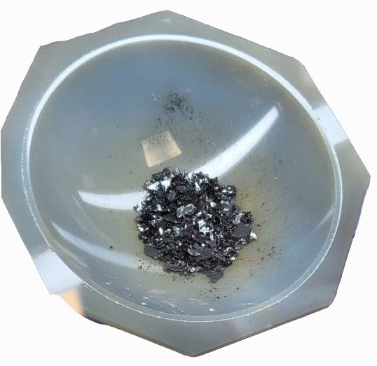
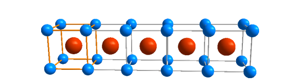

Ever since the successful isolation of a single sheet of graphene from bulk graphite in 2004, research into two-dimensional materials,
where the layers are held by weak forces, has attracted a lot of research interest. This is mainly driven by the compelling properties of the individual atomic layers.
With these materials, novel devices such as tunnelling transistors, resonant tunnelling diodes and light-emitting diodes have been discovered.
2D materials have properties that are strikingly different from their 3D parent compound, and their properties range from metals, semi-metals, semiconductors and insulators.
Because these layered materials are held by weak forces, the individual atomic layers can easily be separated and transferred onto a wide variety of substrates, enabling easy integration with silicon technology that is technologically mature.
However, 2D magnets have remained elusive and were recently discovered in 2017.
This was and still remains very exciting as they offer the possibility of tuning their electronic and mechanical properties using an electric field or stain.
This permits the conception of devices where the magnetism is controlled at will.
Combining 2D magnets and other 2D materials will probably result in structures with completely new and unexpected properties we can explore theoretically and experimentally.
The challenge now is to find 2D magnets at room temperature.
Ising Model
The simulation shows how the two dimensional system approach a magnetic phase
at low temperatures.
This article is about a project that investigated the structural properties of the layered semiconducting material vanadium tri-iodide (VI3).
VI3 is confirmed to become magnetic around 50 K down to its monolayers in the literature.
Also, it is well known that the crystal structure of the compound changes around 80 K.
This structural transition was also confirmed in this project.
However, there are controversies surrounding the crystal structure of the material above and below the transition temperature.
Different studies report different structures in the high and low-temperature regions.

Shiny crystals of vanadium tri-iodide
The VI3 material is of special importance because it offers more opportunities to study magnetism in layered structures and possibilities for future 2D devices.
The inconclusiveness of determining the crystal structure of VI3 has limited our full understanding of its properties and its potential as a monolayer magnetic material.
To solve this, the project tested the performance of all the reported crystal structures of VI3 in describing the atomic positions of the compound.
The aim was to find the crystal structure that best describes VI3 at all temperatures.
The high-temperature structure of VI3 is trigonal, with the best fitting space group being rhombohedral R-3. The compound
transitions into the lower symmetry monoclinic structure below 80 K. The best fitting space group in the low temperature
region is the C2/c space group.
The process of determining the crystal structure of the powdered VI3 starts by shining X-rays onto the material.
The radiation scatters and carries information about the material. The scattered radiation is observed as a diffraction pattern unique to the material being irradiated.
VI3 is a crystal, meaning it is made up of unit cells that spread out through the whole crystal. Hence, describing
this unit block is all that is needed to describe the whole crystal. The unit cell is defined by its length in the
X, Y and Z directions, and also the position of its atoms. A space group, which is a set of symmetry operations, is used to obtain
the coordinates of all the atoms in the crystal using the unit cell information. There are 230 possible space groups.
The structural information about the unit cell and the space group is obtained from the diffraction pattern. This is done by creating a model that tries to match the diffraction pattern by
refining the structural parameters. The specific space group, when combined with the refined structural parameters that closely match
the diffraction pattern is the crystal structure of the material. This process is called Rietveld refinement, and more details can be found here.

Unit Cell
A crystal is made up of a periodic arrangement of unit cells
The project used the Rietveld method to see how closely each reported crystal structure matched the measured diffraction pattern.
It was found that the R-3 rhombohedral space group best describes the crystal structure at high temperatures.
The C2/c monoclinic space group best fits the X-ray diffraction pattern at low temperatures.
This project helped to clarify the confusion surrounding the crystal structure of vanadium tri-iodide.
With a clear picture of the crystal structure, future research projects can focus on the magnetic properties of this material.
This may help pave the way to enable 2D magnets to be used as the architecture of next-generation electronic devices.
2D magnets are currently one of the most exciting research areas due to their potential in topological magnonics, low-power spintronics, quantum computing and optical communication.
It has the potential to significantly change the landscape of data storage and information processing.